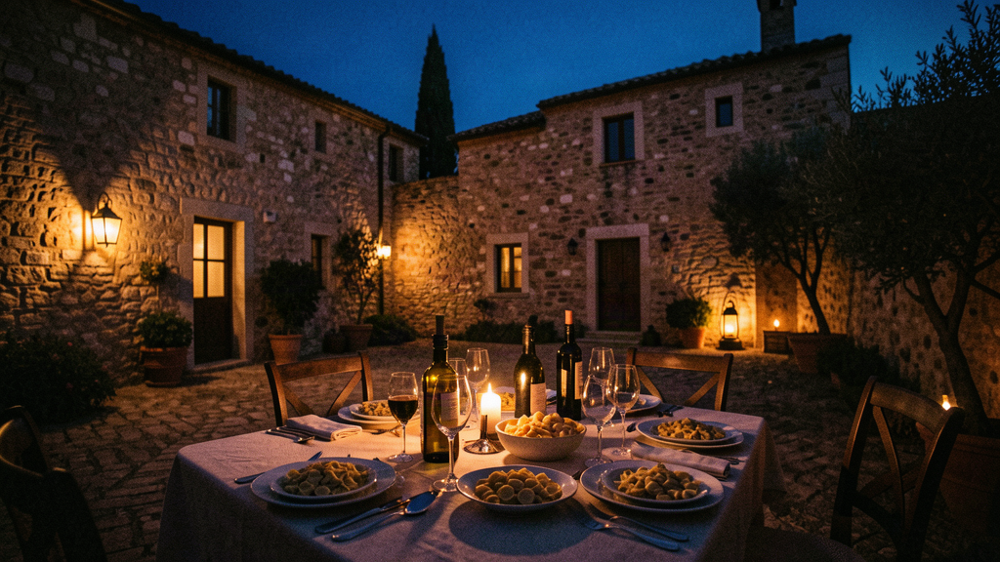
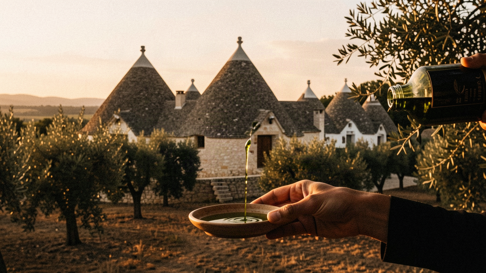
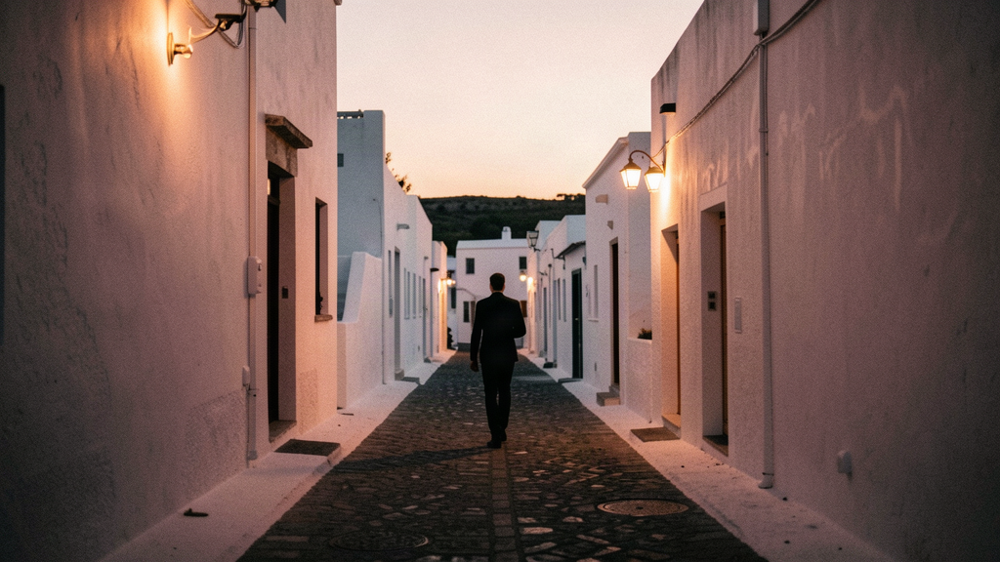
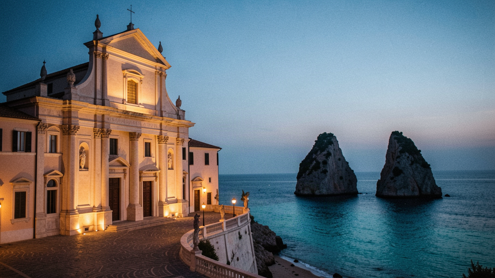
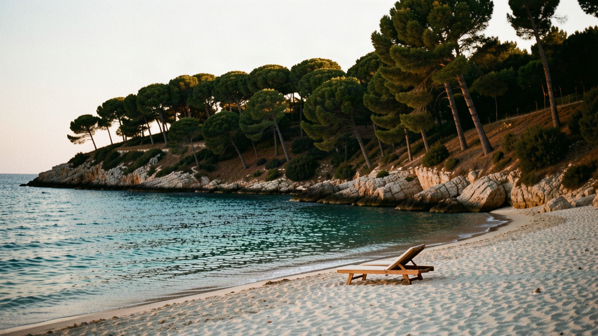
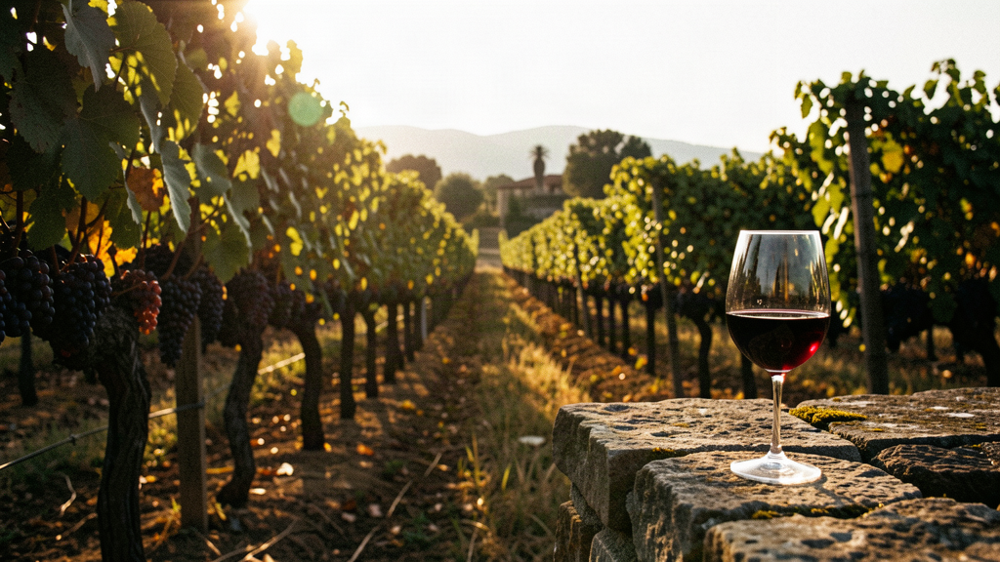
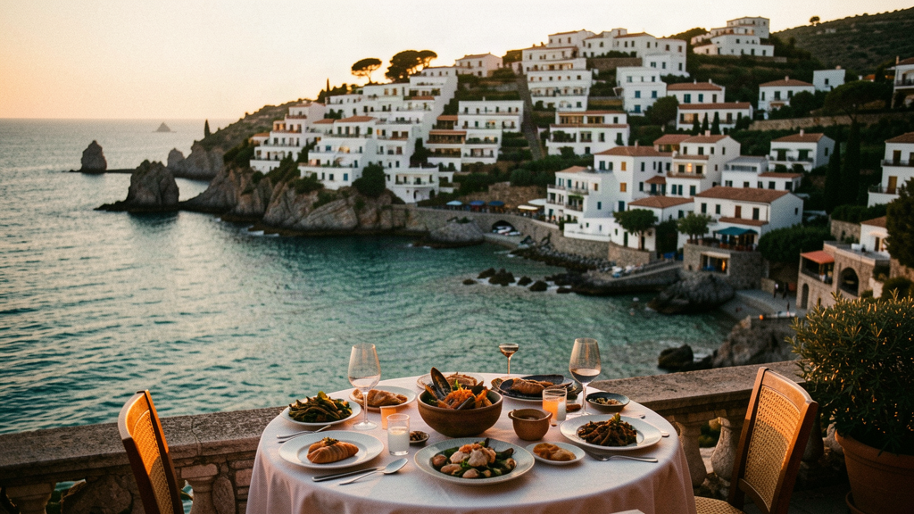

Italy · Spring
Seven nights, your own room, a table of people your age. White towns, long lunches, the Adriatic at the bottom of the heel — before the heat and the summer crowds.
You show up solo. You don't travel alone.
This is the spring trip — April into May, before the heat and before the summer crowds. White towns, long lunches, the Adriatic at the bottom of the heel. We base you in a converted masseria in the Valle d'Itria, move you to Lecce, and end on the coast at Polignano a Mare.
Lucia grew up in Ostuni and has run food walks for the local Slow Food group for nine years. She does the olive-oil tastings herself and knows which trattoria is open on a Tuesday. She travels with the group for the whole week; a local guide joins for the Lecce and Salento days.
You won't be the only one. Your table this week is somewhere between four and eight people, all in their late 30s to 50s, placed together because the way you travel is likely to sit well side by side — pace, energy, how much you want planned versus left open. We can't promise you'll be best friends. We won't pretend to. What you get is company at the table and quiet in your room.

— Fly into Bari Karol Wojtyła Airport (BRI). A driver meets you; it's about 55 minutes south on the SS16 to the masseria, a working farm with stone rooms set among olive trees outside Ostuni.
— Settle in. Your room is yours alone. The rest of the table arrives through the afternoon; we meet properly at the aperitivo.
— Dinner at the masseria. Vegetables from the garden, orecchiette, the house olive oil. Nobody eats alone on night one.

— Drive 35 minutes to Alberobello. Walk Rione Monti, the hillside of roughly 1,000 trulli with their cone roofs, then Trullo Sovrano, the only two-floor trullo open as a house museum. Lucia explains the dry-stone method without turning it into a lecture.
— Back through the Valle d'Itria to an olive grove near Cisternino. Puglia grows a large share of Italy's olive oil; you taste three or four cold-pressed oils side by side and learn to tell bitter from rancid. Then free time in Cisternino, known for butchers who grill your cut on the spot.
— Slow Food dinner in Ostuni at Osteria del Tempo Perso, in a vaulted stone room. The table orders family-style.

— Ostuni on foot: the cathedral with its rose window, the lanes of the old town painted white with lime, the view down to the sea.
— Free, or join Lucia at the market. Lunch is long and unrushed — this is the part of the day Puglia does best, and we leave room for it.
— Back at the masseria or a short drive to Locorotondo for dinner among the circular town's balconies.

— Check out, drive about 1 hour 15 to the Salento. Stop at Torre dell'Orso to see Le Due Sorelle, the two rock stacks off the beach, and Grotta della Poesia, a flooded sinkhole the locals swim in.
— Into Lecce. Walk Basilica di Santa Croce and Piazza del Duomo; the Baroque here is carved from soft local stone. Check into your Lecce hotel — own room, as always.
— Dinner at Cibus, a small place doing Salento cooking without fuss.

— Drive to Baia dei Turchi or Punta della Suina, quiet coves with pine behind the sand. The sea in May is cold but swimmable for the willing.
— South to Santa Maria di Leuca, the very tip of the heel where the Adriatic meets the Ionian, or turn to Otranto and its cathedral with the Tree of Life mosaic.
— Seafood in Otranto harbour, or back to Lecce.

— Visit a Primitivo estate — Tenute Rubino near Brindisi or Leone de Castris at Salice Salentino. A walk through the vines, a taste of three reds, no pressure to buy.
— Free in Lecce. The Roman amphitheatre sits in the middle of the city; you can see it in ten minutes.
— The table's last Lecce dinner.

— Drive about 1 hour 40 northwest to Polignano a Mare. Walk Lama Monachile, the cove under the bridge, and look down at Grotta Palazzese from above (the cave restaurant is yours only if you want the bill — we eat elsewhere).
— Lunch at Pescaria for raw Adriatic fish, or free time on the terrace. The sea is right there.
— Final dinner overlooking the water. Next morning it's a 35-minute transfer to BRI for your flight home.
Spring is mild — roughly 18–23°C — but the sea is cold and one or two sites keep short hours before June. We've built the days around that. You won't come home with a tan in May; you'll come home with a table you actually ate with.
From £2,350 per person · 7 nights · own room included · expected 2026/27. Flights separate. Register your interest; we write when a table is composed for the season, not before.
When a table opens for Italy in Spring, we'll tell you. One message when there's something real — no newsletter, no hard sell.
Register your interest